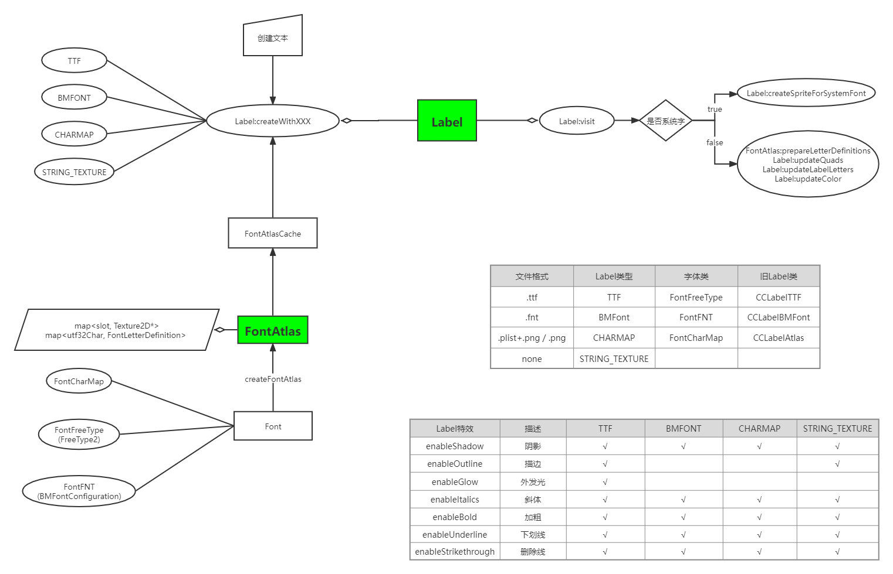
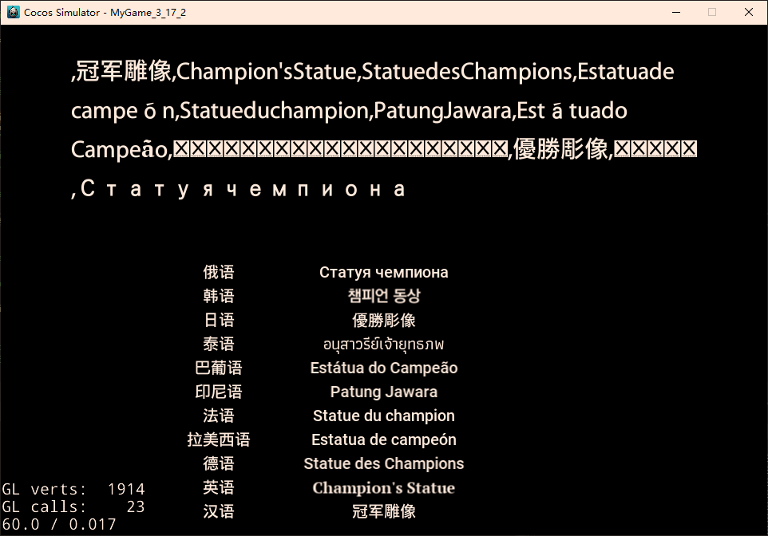
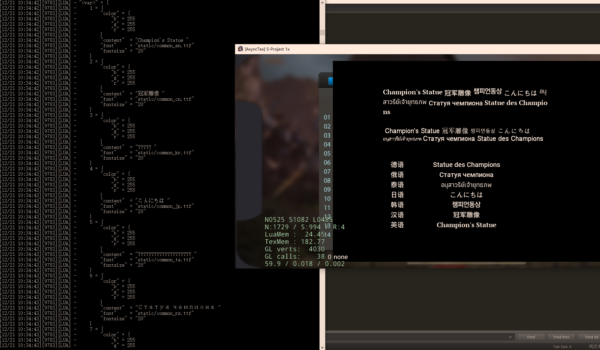
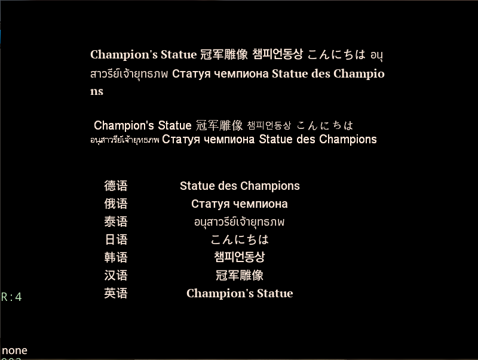
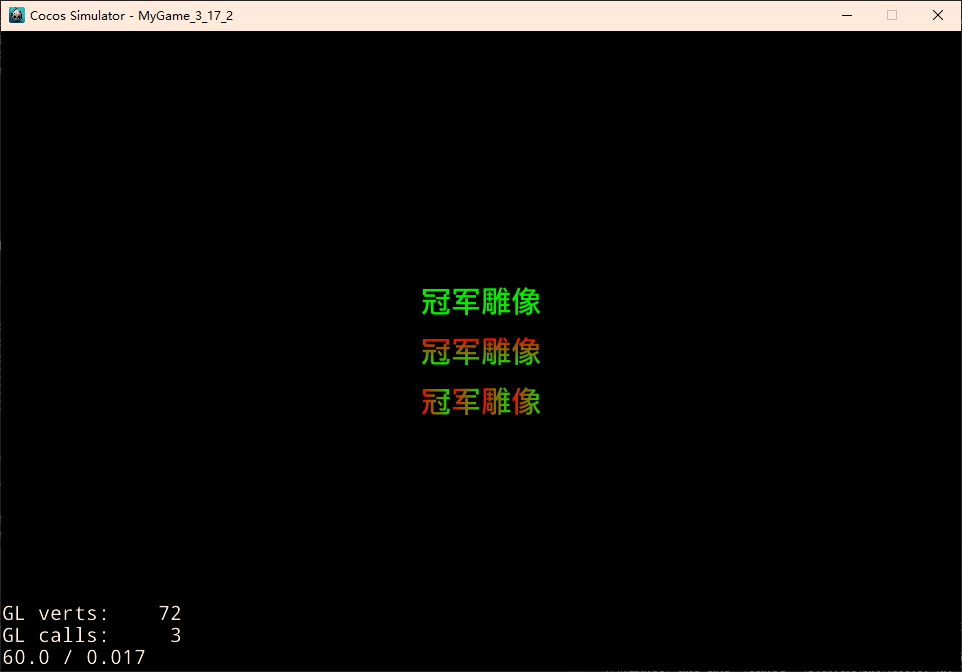

Cocos2d之Label
概览
本文主要分为以下几部分
- 以 Cocos2dx V3.17.2 版本，剖析Label框架
- 看项目组所用的框架，对比分析变动
- 了解相关概念后，针对具体问题，进行探索，寻求解决方案
引擎
版本 V 3.17.2
Label框架，大体分为三部分：
- Label，面像引擎使用者的显示对象，提供文本标签操作方法
- Font，描述一个字体所能表示的字符集，及某个字体如何显示，可以用这些信息创建FontAtlas
- FontAtlas，根据Font信息来创建FontAtlas，缓存、管理字集所用的纹理
再加上一些辅助工具类
- FontAtlasCache，对FontAtlas对象缓存管理
- LabelTextFormatter，提供Label静态方法，如换行、对齐等
相关文件与类
关联文件
- Label
- CCLabel.h & CCLabel.cpp
- CCLabelAtlas.h & CCLabelAtlas.cpp
- CCLabelTTF.h & CCLabelTTF.cpp
- CCLabelBMFont.h & CCLabelBMFont.cpp
- CCLabelTextFormatter.cpp
- Font
- CCFont.h
- CCFontAtlas.h & CCFontAtlas.cpp
- CCFontAtlasCache.h & CCFontAtlasCache.cpp
- CCFontFNT.h & CCFontFNT.cpp
- CCFontCharMap.h & CCFontCharMap.cpp
- CCFontFreeType.h & CCFontFreeType.cpp
关联类
- Label
- Label
- LabelTTF
- LabelAtlas
- LabelBMFont
- LabelLetter
- LabelProtocol
- Font
- Font
- FontAtlas
- FontAtlasCache
- FontFreeType
- FontCharMap
- FontFNT
- BMFontConfiguration
流程
此处流程，仅讨论 Label相关，不涉及过去的 LabelTTF、LabelAtlas、LabelBMFont 等
主要是分为
- create，创建
- update，更新
create 创建
关于创建文本，内部可分为两类
- 使用FontAtlas来绘制的；TTF、BMFont、CharMap 类型
- 不使用FontAtlas来绘制的；STRING_TEXTURE 类型
使用FontAtlas来绘制的文本，流程为
- 通过配置文件，去FontAtlasCache获得 FontAtlas 配置
- FontAtlasCache 在缓存FontAtlas时，每个类型文件，缓存的哈希key取值不同（例如TTF格式文件，通过文件名、字体大小、字体描边大小 生成索引）
- Label与FontAtlas对应关系为一对一，即同一时刻，只会从一个FontAtlas中获取配置、图集等
- 最终都会调用 Label:setFontAtlas 来 释旧创新
- 创建流程，主要结果就是设置Label的字体FontAtlas配置（_fontConfig）与文本类型（_currentLabelType）
不使用FontAtlas来绘制文本，流程为
- 设置一些配置，字体文件名、字体大小、文本内容等
- 主要结果也是设置 文本类型（_currentLabelType）
visit 绘制
visit流程为
- updateContent
- 根据当前文本类型及过去文本类型，清理缓存
- 根据不同文本类型，使用不同方法创建文本纹理
- 在当前文本纹理上，加持其他文本特效
- draw
- 判断可见性
- 根据对应绘制信息，加入绘制队列
文本，Label
Label是Node派生类，它知道如何去绘制文本。
可以通过以下几种方式创建：
- TTF文件，LabelTTF
- FNT文件，LabelBMFont
- 指定标准plist/png，LabelAtlas
- 内置系统字，LabelTTF
Label并非LabelTTF、LabelBMFont、LabelAtlas的父类，而是用来统一规范各种Label的使用，是Cocos V3.0版本新加的统一管理类。
Cocos V2.0版本，创建文本要根据文件，采用不同类名去创建；于是Cocos V3.0 版本，新增Label类，统一管理Label创建与操作，当然也可以用之前方法去创建（不建议）。
即使用之前的方式创建文本，LabelTTF与LabelBMFont也都是通过调用Label来创建，所有接口也都是通过调用Label实现

一些定义
重要结构与枚举1
2
3
4
5
6
7
8
9
10
11
12
13
14
15
16
17
18
19
20
21
22
23
24
25
26
27
28
29
30
31
32
33
34
35
36
37
38
39
40
41
42
43
44
45
46
47
48
49
50
51
52
53
54
55
56
57// 重绘类型
enum class Overflow
{
//In NONE mode, the dimensions is (0,0) and the content size will change dynamically to fit the label.
NONE,
/**
*In CLAMP mode, when label content goes out of the bounding box, it will be clipped.
*/
CLAMP,
/**
* In SHRINK mode, the font size will change dynamically to adapt the content size.
*/
SHRINK,
/**
*In RESIZE_HEIGHT mode, you can only change the width of label and the height is changed automatically.
*/
RESIZE_HEIGHT
};
// 文本类型
enum class LabelType {
TTF,
BMFONT,
CHARMAP,
STRING_TEXTURE
};
// Label特效
enum class LabelEffect {
NORMAL,
OUTLINE,
SHADOW,
GLOW,
ITALICS,
BOLD,
UNDERLINE,
STRIKETHROUGH,
ALL
};
// 当Label创建时加载的字符集合
enum class GlyphCollection {
DYNAMIC,
NEHE,
ASCII,
CUSTOM
};
struct LetterInfo
{
char32_t utf32Char;
bool valid;
float positionX;
float positionY;
int atlasIndex;
int lineIndex;
};
创建方法
- 创建空对象，默认是系统文本
- 创建系统文本，基于平台提供的API
- 创建TTF文本，基于FreeType2
- 创建FNT文本，基于Bitmap Font File
- 创建CharMap文本，基于Char Map Configuration
支持效果
各种Label效果1
2
3
4
5
6
7
8
9
10
11
12
13
14
15
16
17
18
19
20
21
22
23
24// 开启阴影；最后参数模糊半径无用，不支持模糊
void enableShadow(const Color4B& shadowColor = Color4B::BLACK,const Size &offset = Size(2,-2), int blurRadius = 0);
// 开启描边；仅支持 TTF & STRING_TEXTURE（系统字）
void enableOutline(const Color4B& outlineColor,int outlineSize = -1);
// 开启外发光；仅支持 TTF
void enableGlow(const Color4B& glowColor);
// 开启斜体；通过 setRotationSkewX(12) 实现
void enableItalics();
// 开启加粗；通过横向偏移阴影实现
void enableBold();
// 开启下划线；创建DrawNode画线，与删除线共用DrawNode
void enableUnderline();
// 开启删除线；创建DrawNode画线，与下划线共用DrawNode
void enableStrikethrough();
// 取消某种效果
void disableEffect();
void disableEffect(LabelEffect effect);
各种对齐
1 | // 水平对齐与垂直对齐 |
设置尺寸与换行相关
1 | // 允许换行 |
其他绘制项支持
1 | // 修改文本颜色；仅支持 TTF & STRING_TEXTURE（系统字） |
配件类
LabelLetter
LabelLetter用于在没有SpriteBatchNode情况下更新纹理。
它继承自Sprite类，它并不会被直接绘制，用来更新纹理，矩阵变换及颜色等。
LabelProtocol
Label通用接口，只有 setString/getString
LabelTextFormatter
提供Label一些文本格式处理方法
1 | // 计算对齐偏移 |
文本（旧），LabelTTF、LabelBMFont、LabelAtlas
LabelTTF
LabelTTF是绘制文本的TextureNode的派生类，因此所有TextureNode的特性都可适用于LabelTTF。
但LabelTTF效率较低，可以考虑使用LabelAtlas或LabelBMFont来替代，所需的TTF文件可放在程序可访问的地方来使用。
- 资源
- ttf格式文件
- 优点
- 创建方便
- 支持系统字体（节省资源）
- 适用性广（用系统字库，能显示的内容多）
- 缺点
- 创建效率低
- 文字更新效率低
- 效果简陋（丑）
创建方式
- 指定 显示文本、字体名、字体大小、文本尺寸、对齐方式
- 指定 字体配置项、显示文本
字体配置项1
2
3
4
5
6
7
8
9
10
11
12
13
14
15
16struct CC_DLL FontDefinition
{
public:
std::string _fontName;
int _fontSize;
TextHAlignment _alignment;
TextVAlignment _vertAlignment;
float _lineSpacing;
Size _dimensions;
Color3B _fontFillColor;
GLubyte _fontAlpha;
FontShadow _shadow;
FontStroke _stroke;
bool _enableWrap;
int _overflow; // Label:Overflow枚举值
};
支持效果
其中只有TTF与SystemFont支持 描边、修改字体颜色
阴影
- LabelTTF；无效参数：参数3 模糊参数，参数4 更新纹理；无法控制阴影颜色
- Label；无效参数：参数3 模糊参数
1
2
3
4
5
6
7void LabelTTF::enableShadow(const Size &shadowOffset, float shadowOpacity, float shadowBlur, bool /*updateTexture*/)
{
Color4B temp(Color3B::BLACK);
temp.a = 255 * shadowOpacity;
_renderLabel->enableShadow(temp,shadowOffset,shadowBlur); // CCLabel:enableShadow
_contentDirty = true;
}
描边
- LabelTTF，无法控制描边透明度
1
2
3
4
5void LabelTTF::enableStroke(const Color3B &strokeColor, float strokeSize, bool /*updateTexture*/)
{
_renderLabel->enableOutline(Color4B(strokeColor),strokeSize); // CCLabel:enableOutline
_contentDirty = true;
}
修改字体颜色
- LabelTTF，无效参数：参数2 更新纹理；无法控制透明度
1
2
3
4void LabelTTF::setFontFillColor(const Color3B &tintColor, bool /*updateTexture*/)
{
_renderLabel->setTextColor(Color4B(tintColor));
}
颜色混合
- LabelTTF同Label一致
1
2
3
4void LabelTTF::setBlendFunc(const BlendFunc &blendFunc)
{
_renderLabel->setBlendFunc(blendFunc);
}
水平/垂直 翻转
- Label 使用 setScaleX/Y 实现，替代 setFlippedX/Y
1
2
3
4
5
6
7
8
9
10
11void LabelTTF::setFlippedX(bool flippedX)
{
if (flippedX)
{
_renderLabel->setScaleX(-1.0f); // CCLabel:setScaleX
}
else
{
_renderLabel->setScaleX(1.0f);
}
}
LabelBMFont
LabelBMFont是使用FNT配置文件和图片来显示的一种文本标签，它的效率高于LabelTTF，但只能显示图片中的字符。
每个字符都是一张图片（Sprite），因此所有的字符都可以适应Sprite的特性。
所有内置字符锚点都是(0.5, 0.5)，不推荐修改，有可能会影响绘制。
LabelBMFont与Label、LabelAtlas一样，实现了LabelProtocol接口；
LabelBMFont有Label的灵活性、LabelAtlas的速度，并且支持所有Sprite的特性，因此尽量使用它。
- 资源
- fnt格式文件及图集
- 优点
- 效率高
- 每个字符都是图片，支持Sprite特性
- 例如：旋转、缩放 等
- 可以对每个字体进行自定义优化
- 缺点
- 只能显示图集内的字符
创建方式
- 指定 显示文本、fnt文件名、单字宽度、对齐方式、字符偏移
- 直接创建一个对象，后续根据配置文件初始化
字符偏移，指解析fnt文件，得到对应字符位置后，再加上这个偏移，去图集中截取对应区域显示。
圆心为字符左上角，向右为正向x轴，向下为正向y轴；
这个偏移对整个fnt文件生效，就是第一次载入fnt文件时，就赋值，后续载入即使没有设置偏移，也会采取之前默认的偏移。
fnt文件的映射，是一个ASCII码对应图片区域的映射。
可以根据自己的需要，进行自定义映射，比如做一个小笑脸表情，我们可以设定它的ASCII映射码为97，那在设置文本为a的时候，就会显示这个笑脸。
fnt文件格式1
2
3
4
5
6
7
8
9
10
11
12
13
14
15
16info face="Arial" size=32 bold=0 italic=0 charset="" unicode=1 stretchH=100 smooth=1 aa=1 padding=0,0,0,0 spacing=1,1 outline=0
common lineHeight=32 base=26 scaleW=256 scaleH=128 pages=1 packed=0 alphaChnl=1 redChnl=0 greenChnl=0 blueChnl=0
page id=0 file="font_zhandouli2.png"
chars count=12
char id=43 x=103 y=41 width=21 height=40 xoffset=0 yoffset=0 xadvance=21 page=0 chnl=15
char id=48 x=192 y=0 width=26 height=40 xoffset=0 yoffset=0 xadvance=26 page=0 chnl=15
char id=49 x=125 y=41 width=19 height=40 xoffset=0 yoffset=0 xadvance=19 page=0 chnl=15
char id=50 x=219 y=0 width=26 height=40 xoffset=0 yoffset=0 xadvance=26 page=0 chnl=15
char id=51 x=0 y=41 width=25 height=40 xoffset=0 yoffset=0 xadvance=25 page=0 chnl=15
char id=52 x=108 y=0 width=27 height=40 xoffset=0 yoffset=0 xadvance=27 page=0 chnl=15
char id=53 x=26 y=41 width=25 height=40 xoffset=0 yoffset=0 xadvance=25 page=0 chnl=15
char id=54 x=136 y=0 width=27 height=40 xoffset=0 yoffset=0 xadvance=27 page=0 chnl=15
char id=55 x=78 y=41 width=24 height=40 xoffset=0 yoffset=0 xadvance=24 page=0 chnl=15
char id=56 x=52 y=41 width=25 height=40 xoffset=0 yoffset=0 xadvance=25 page=0 chnl=15
char id=57 x=164 y=0 width=27 height=40 xoffset=0 yoffset=0 xadvance=27 page=0 chnl=15
char id=97 x=0 y=0 width=107 height=40 xoffset=0 yoffset=0 xadvance=107 page=0 chnl=15
支持效果
获取单个字符（图片），索引从0开始
- 获取字符后，可进行任何对图片的操作
- 每个字符锚点是 (0.5, 0.5)
1 | Node* LabelBMFont::getChildByTag(int tag) const |
设置 宽度 与 自动换行 / 空格换行
1 | // 设置最大宽度 |
修改字体颜色，透明度
- 可整体修改，也可通过获取单个字符，单个修改
- 使用 setOpacity 调整透明度
1 | void LabelBMFont::setColor(const Color3B& color) |
支持文本对齐
1 | void LabelBMFont::setAlignment(TextHAlignment alignment) |
颜色混合
1 | void LabelBMFont::setBlendFunc(const BlendFunc &blendFunc) |
LabelAtlas
LabelAtlas常用来显示数字，对应Label中的CharMap。
效率很高，可替代Label；相较于Label，LabelAtlas对每个字符有固定宽高；但是灵活性有限，不如使用LabelBMFont。
- 资源
- plist文件与图集
- 单图集
- 优点
- 效率高
- 缺点
- 只能显示有限的ASCII码字符
- 功能支持有限
创建方式
- 直接创建对象，后续初始化
- 指定 显示文本、图集文件名、单字符宽高、起始字符ASCII码
- 指定 显示文本、plist文件名
即使使用plist文件，在文件内也要注明 图集文件名、单字符宽高、起始字符ASCII码
1 | <?xml version="1.0" encoding="UTF-8"?> |
起始字符ASCII码是用来做差值，获取对应图片索引。
- 我们起始字符ASCII码设置为 48（0的ASCII码）
- setString(“4”)，4的ASCII码为 52；因此索引为 52-48 = 4；索引从0开始
- 取图集中第5个图片返回（此处第n个图片，是根据每个图片固定宽高，来获取要截取的区域）
可以发现，这里的映射也是自定义映射；CCLabelBMFont中想做的 表情图片显示，也是可以实现的。
- 创建9个表情在图集中，设定好宽高
- 起始字符设置为48
- 输入数字0-8，对应显示9个表情图片
支持效果
修改字体颜色，透明度
- 继承自AtlasNode，相关接口都是AtlasNode提供
- 使用 setOpacity 调整透明度
- 使用 setColor 调整颜色
- 使用 setOpacityModifyRGB 设置透明度是否影响RBG色值
1 | // CCAtlasNode.h |
字体，Font
Font类直接继承自Ref，有3种派生类
- FontCharMap
- FontFNT
- FontFreeType
不同字体类分别负责对不同格式文件解析，最终都是创建 FontAtlas 对象。
1 | FontAtlas * XXX::createFontAtlas() |
总的来说，可以分为以下几部分
- 各式字体文件格式，通过Font派生类解析并存储相应文件的配置（FontCharMap、FontFNT、FontFreeType）
- 所有Font派生类，都需要支持创建FontAtlas对象
- Label直接使用FontAtlas对象，而不知晓解析方式等；为便于重用，设置缓存池 FontAtlasCache
- 这样 Label - FontAtlas - Font 之间做到解耦
FontAtlas & FontAtlasCache
FontAtlas 是每种字体对应的图集，它缓存并管理一系列 Texture2D 对象，以及每个字符的配置结构。Label可以使用它更方便的渲染文字。1
2
3
4
5
6
7
8
9
10
11
12
13struct FontLetterDefinition
{
float U;
float V;
float width;
float height;
float offsetX;
float offsetY;
int textureID;
bool validDefinition;
int xAdvance;
bool rotated;
};
FontAtlasCache 意如其名，做FontAtlas的缓存。
针对不同字体提供不同方法
- TTF
- 根据TTF配置获取
- 支持根据文件名卸载
- FNT
- 根据FNT文件获取
- 支持根据配置重载
- CharMap
- 根据plist、图集等配置获取
TTF配置
1 | typedef struct _ttfConfig |
FontFNT
FontFNT实现对BMfont的解析，通过BMFontConfiguration类来解析fnt文件，将文件内所有字符及对应图片名、文字边距属性、文字配置属性保存起来，提供方便调用的接口。
创建FontFNT流程
- 解析fnt格式文件，得到 BMFontConfiguration 对象
- 使用 BMFontConfiguration 对象与 Texture2D 创建 FontFNT 对象
- FontFNT对象存储所有字符的配置，提供接口方便上层调用
创建FontAtlas流程
- 检测BMFontConfiguration是否正常
- 初始化 FontAtlas
- 设置 FontAtlas 的一些配置
- 载入所需的图集（当前只支持一张图集）
BMFontConfiguration支持的fnt文件配置及对应解析方法
1 | BMFontConfiguration::parseConfigFile |
| 关键字 | 方法 |
|---|---|
| info face | parseInfoArguments |
| common lineHeight | parseCommonArguments |
| page id | parseImageFileName |
| chars c | 忽略解析 |
| char | parseCharacterDefinition |
| kerning first | parseKerningEntry |
此处也支持解析二进制文本，解析规则基于文件格式 Bitmap Font Generator1
BMFontConfiguration::parseBinaryConfigFile
注意：
- 目前BMFont只支持单张图集
- 若想调整，可尝试修改 FontAtlas * FontFNT::createFontAtlas 内关于图集ID的处理
- 解析二进制内容，仅支持版本3
The first three bytes are the file identifier and must always be 66, 77, 70, or “BMF”. The fourth byte gives the format version, currently it must be 3.
Version 1 (introduced with application version 1.8).
Version 2 (introduced with application version 1.9) added the outline field in the infoBlock and the encoded field in the commonBlock.
Version 3 (introduced with application version 1.10) removed the encoded field in the commonBlock, and added the alphaChnl, redChnl, greenChnl, blueChnl instead.The size of each block is now stored without accounting for the size field itself. The character id in the charsBlock and the kerningPairsBlock was increased to 4 bytes to support the full unicode range.
FontFreeType
FontFreeType实现对ttf格式文件处理，使用第三方库FreeType来解析TTF。
内部使用一个cache来缓存ttf文件信息，提供获取GLyphBitmap的方法来得到指定文字的位图。
流程：
- 初始化FontFreeType对象
- FT_Stroker_New，创建FT_Stroker对象
- FT_Stroker_Set，调整FT_Stroker对象
- 设置字符集 GlyphCollection
- 初始化FT_Face对象（FreeType库返回对象的句柄）
- 根据字体名先在本地缓存中查找
- 存在，则引用计数+1
- 创建FT_Face对象流程
- FT_New_Memory_Face
- FT_Select_Charmap
- FT_Set_Char_Size
- 根据字体名先在本地缓存中查找
- 释放FontFreeType对象
- FT_Stroker_Done，释放FT_Stroker对象
- FT_Done_Face，释放FT_Face对象
- 将对应字体名引用从缓存中-1
创建 FontAtlas流程
- 初始化 FontAtlas 对象
- 若当前字符集 非GlyphCollection::DYNAMIC
- 准备文本的所有字符配置项，FontAtlas::prepareLetterDefinitions
- 获取文本中未显示过的字符
- 遍历所有新字符，生成配置项 FontLetterDefinition ，缓存
- 更新当前页图集信息
- 准备文本的所有字符配置项，FontAtlas::prepareLetterDefinitions
FontCharMap
实现LabelAtlas图片的解析，创建方式如下
- 通过纹理、单字符宽、单字符高、起始字符
- 通过plist文件
流程
- 通过图片文件名或解析plist，获取图片并载入缓存
- 初始化 FontCharMap（根据图集、单字符宽、单字符高、起始字符）
创建 FontAtlas 流程
- 初始化 FontAtlas
- 设置 FontLetterDefinition 基础配置
- 遍历所有字符填充到 FontAtlas 字符配置
- 载入FontAtlas图集
其他
GUI中的文本
CocosStudio 中的文本控件
- 文本 - UIText - LabelType::TTF / LabelType::STRING_TEXTURE
- 艺术数字 - UITextAtlas - LabelType::CHARMAP
- FNT字体 - UITextBMFont - LabelType::BMFont
一般主要用UIText控件来实现，较少用到其他两个。
这三种文本，都可以通过 getVirtualRenderer 获取到Label节点，对它进行操作。
本质上来讲，都是通过Label来实现的。
GUI & UIWidget
GUI 即 图形用户界面（Graphical User Interface）。
相对于用代码来创建各种按钮、图片等，使用可视化的拖动指定控件方式创建按钮、图片等，是更加符合开发者需要且更简便快捷的。
对于 cocos2d-x 来讲，GUI有:
- CocosBuilder
- CocosStudio（常用）
- FairyGUI（非官方）
在CocosStudio中配合使用的控件，都继承自同一个父类UIWidget。
UIWidget主要功能为：
- 实现一系列位置、布局、自适应相关功能
- 封装了触摸处理及控件焦点管理
FreeType库
简介（官网）
- 一款 免费、开源、可移植、高质量的 字体引擎
- 支持多种字体格式文件，并提供统一的接口
- 支持单色位图、反走样位图渲染
- 用户可灵活根据需要裁剪
一些概念：
句柄库
- 含义：FreeType句柄库，用来加载多个字体外观
- 类型：FT_Library
- 方法
- 创建：FT_Init_FreeType
- 释放：FT_Done_FreeType
字体外观
- 含义：每种字体对应一个字体外观，通过句柄库载入，字体外观中包含多个字形的配置信息
- 类型：FT_Face
- 方法
- 创建：FT_New_Memory_Face
- 释放：FT_Done_Face
字形
- 含义：每个字符都可视作一个字形
- 类型：FT_GlyphSlot（设置不同字符，将字形载入到制定槽位中）
- 方法（在 freetype.h 中有API介绍）
- 从字体外观中载入对应字符的信息: FT_Load_Char
- 设置字符大小: FT_Set_Char_Size
- 获取字形索引: FT_Get_Char_Index
关于字形的参数，水平和垂直有所不同
水平布局

垂直布局

项目
待补充
探索
支持多TTF
问题
在支持多语言版本时，玩家可随意输入自己名称，在界面中显示名称时，无法使用单一的国家TTF文本来显示名称，不得已使用系统字，系统字不够美观，效果差。
如果单Label可支持多TTF，就可以让玩家输入的内容，都用TTF样式文本显示，美观度得到保证。
基础
首先，确定TTF 文本的创建流程
- FreeType2 库，存所有字符配置信息；根据不同字符返回对应字符的配置信息（宽、高、矩形、偏移）及 位图绘制信息（获取字符信息文本）
- 将字符位图信息拼接到当前纹理信息中（拼接纹理信息文本），将字符配置信息缓存
- 将当前纹理根据新纹理信息更新（绘制纹理信息）
- 遍历所有显示字符，根据字符配置信息，将对应位置纹理绘制到本Label纹理中（加入绘制队列）
这里面，涉及到两个纹理：
- 使用同TTF文件时，共用的纹理
- 每个Label使用的自己的纹理
每次新字符都要经历：
- 从TTF获取绘制信息，绘制到 TTF文件共用纹理上
- 再从TTF文件共用纹理，绘制到 Label自己的纹理上
方案一
思路
Label与TTF文件对应关系
- Label : FontAtlas = 1 : 1
- FontAtlas : FT_Face = 1 : 1
此处Label与FontAtlas实际并不是1:1；实际上不同字体大小和描边大小，会使用不同的FontAtlas，为了展述逻辑方便，刻意忽略了这点
有两个方式实现：
- 多FontAtlas
- Label : FontAtlas 变为 1 : n
- 多FT_Face
- FontAtlas : FT_Face 变为 1 : n
相对于多FT_Face，多FontAtlas会导致单个Label使用多个纹理，会增加DC；带来额外负担，所以，使用多FT_Face来实现。
实现
此处，只简要展示一些重要方法
Label支持多TTF创建方式1
2
3
4
5
6
7
8
9/**
* Allocates and initializes a Label, base on FreeType2 with multi font file path.
*
* @param text The initial text
* @param fontFilePathList Multi font file.
* @param fontSize The font size.
*/
static Label* createWithMultiTTF(const std::string& text, std::vector<std::string> fontFilePathList, float fontSize);
bool initWithMultiTTF(const std::string& text, std::vector<std::string> fontFilePathList, float fontSize);
注意tolua的支持
1 | static int lua_cocos2dx_Label_createWithTTF02(lua_State* L) |
从 FontFreeType中获取字形信息的时候，要遍历所有FT_Face
1 | unsigned char* FontFreeType::getGlyphBitmap(uint64_t theChar, long &outWidth, long &outHeight, Rect &outRect,int &xAdvance) |
问题
通过如此配置，已经实现了一个样例，效果如下：

可以发现几个问题：
- 部分文本显示异常
- 空格消失
- 字符间距有问题
- 行间距有问题
部分文本显示异常
- 主要是因为，我们是按照固定顺序来遍历所有ttf文件，判断未找到的条件是FT_Face返回的字符显示信息为nullptr或者位图宽高小于等于0。但是，如果前面的TTF文件中存储了显示不出来的字符信息且设定为占位符，就会导致不再遍历后面的ttf文件
- 例如：
- 韩语显示不了一些汉语，但是又不想显示为空，就拿一些看起来就有问题的字符 × 来替代，让文本显示起来更美观一些；但是这会导致我们向下查找的逻辑失效
- 解决方案
- 可以统计所有非法字符，如果返回的字符是非法字符，也继续向下查找
- 可以计算字符unicode值，根据unicode来判断所属国家，然后优先去对应国家TTF文件中查找
可见，距离投入使用还有一段路程，要后续慢慢优化，
方案二
思路
方案一是修改底层的方式，在一个绘制批次中，显示来自于不同字库的字形。
这里，也可以用在业务层扩展的方式来实现具体需求。
- 分析输入的文本中每个字符所属的国家（通过Unicdoe值）
- 每个字符用对应的字库来创建
- 将这些文本拼接起来（使用富文本）
这样，就可以在业务层直接解决问题，虽然这样修改批次会增多，但是基于使用场景、实现复杂度、维护成本等，使用方案二性价比更高。
实现
在之前的文章中，实现了 判断字符所属国家： 字符集与字符编码
以此为基础，扩展实现。
1 | -- refer to Xutf8.lua UnicodeNationRangeList |
最后结果：
三部分
- 上面部分是富文本实现
- 中间部分是系统字
- 下面部分是TTF分别创建的文本

问题
每个TTF的基线不一致，导致看起来并不在同一个水平线。
调整对齐方式，所有元素在垂直方向上居中对齐。

获取SytemFont实际长度
问题
系统字不支持 getLetter方法。
但在富文本中，若使用系统字，就无法做到精准的分割字符串。
思路
系统字创建，是通过 Texture2D::initWithString 来创建出来的，这里面应该能获取到每个字符的举行区域，每个字符在图内的位置。
但，实际上，创建文本是直接调用字库来创建一批文本，并没有一个个传入，然后创建。
1 | SIZE sizeWithText(const wchar_t * pszText, int nLen, DWORD dwFmt, LONG nWidthLimit) |
当然，这块也可以做成，每个字符传递一次，然后获得每个举行大小，然后再具体计算，成本过高，不推荐。
临时方案，就根据最终宽度与文本长度，进行大概的分割。
Label支持渐变色
问题
让Label支持渐变色。
思路
在updateColor的时候，要设置左上、左下、右上、右下的色值，可以在此处进行处理
方案
创建相关变量、函数并初始化，注册给lua1
2
3
4
5
6
7
8
9
10
11
12
13
14
15
16
17
18
19
20
21
22
23
24
25
26
27
28
29
30
31
32
33
34
35
36
37
38
39
40
41
42
43
44
45
46
47
48
49
50
51
52
53
54
55
56
57
58
59
60
61
62
63
64
65
66
67
68
69
70
71
72
73
74
75
76// ==== Label.h
// 0 - none, 1 - from left to right , 2 - from top to bottom
void gradientColor(int dir, Color4B color = Color4B::WHITE);
int _gradientColorDir;
Color4B _gradientColor;
// ==== lua_cocos2dx_auto.cpp
int lua_cocos2dx_Label_gradientColor(lua_State* tolua_S)
{
int argc = 0;
cocos2d::Label* cobj = nullptr;
bool ok = true;
tolua_Error tolua_err;
if (!tolua_isusertype(tolua_S, 1, "cc.Label", 0, &tolua_err)) goto tolua_lerror;
cobj = (cocos2d::Label*)tolua_tousertype(tolua_S, 1, 0);
if (!cobj)
{
tolua_error(tolua_S, "invalid 'cobj' in function 'lua_cocos2dx_Label_gradientColor'", nullptr);
return 0;
}
argc = lua_gettop(tolua_S) - 1;
if (argc == 1)
{
int arg0;
ok &= luaval_to_int32(tolua_S, 2, (int*)&arg0, "cc.Label:gradientColor");
if (!ok)
{
tolua_error(tolua_S, "invalid arguments in function 'lua_cocos2dx_Label_gradientColor'", nullptr);
return 0;
}
cobj->gradientColor(arg0);
lua_settop(tolua_S, 1);
return 1;
}
else if(argc == 2) {
int arg0;
ok &= luaval_to_int32(tolua_S, 2, (int*)&arg0, "cc.Label:gradientColor");
cocos2d::Color4B arg1;
ok &= luaval_to_color4b(tolua_S, 3, &arg1, "cc.Label:gradientColor");
if (!ok)
{
tolua_error(tolua_S, "invalid arguments in function 'lua_cocos2dx_Label_gradientColor'", nullptr);
return 0;
}
cobj->gradientColor(arg0, arg1);
lua_settop(tolua_S, 1);
return 1;
}
luaL_error(tolua_S, "%s has wrong number of arguments: %d, was expecting %d \n", "cc.Label:gradientColor", argc, 1);
return 0;
tolua_lerror:
tolua_error(tolua_S, "#ferror in function 'lua_cocos2dx_Label_gradientColor'.", &tolua_err);
return 0;
}
调整updateColor方法
1 | void Label::updateColor() |
最终效果：

参考资料
- 《精通COCOS2D-X游戏开发 基础卷》
- Bitmap Font Generator
- FreeType库
- Cocos2d-x V3.17 API
- Cocos2d文档 GitBook